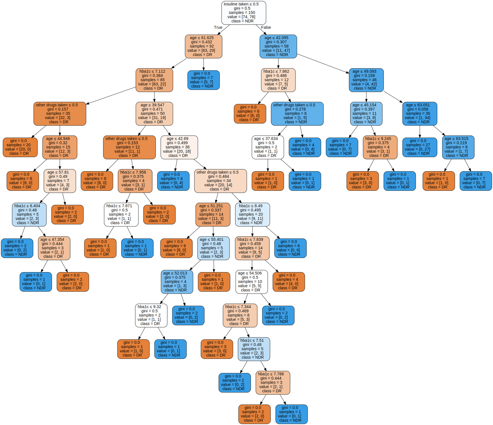
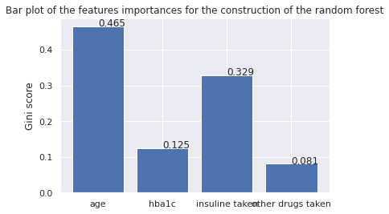
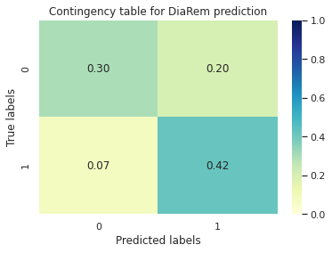
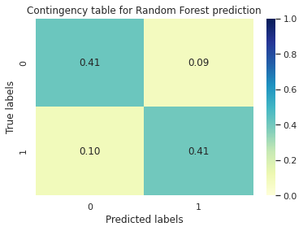
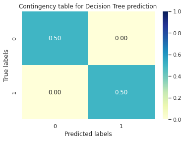
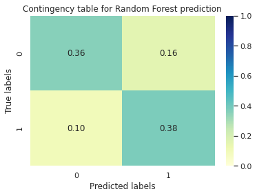
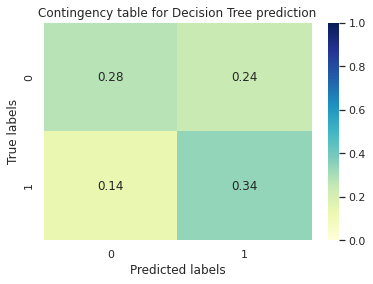
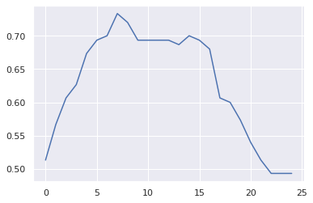
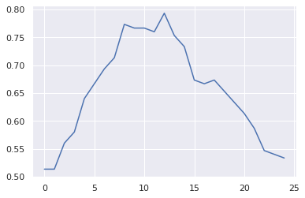
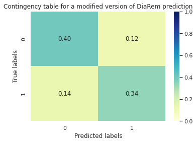

Comparison between trees estimators and the DiaRem score for diabete remission classification
The goal of the TME is to develop practical skills to use decision trees and random forest for real biological applications.
Machine Learning for Medicine - Practical 1
Decsion Trees and Random Forest
Loading data and libraries
import pandas as pd
import graphviz
from sklearn import tree
from sklearn.ensemble import RandomForestClassifier
from sklearn.metrics.cluster import contingency_matrix
from sklearn.model_selection import train_test_split
from sklearn.model_selection import cross_val_score
from sklearn.model_selection import GridSearchCV
from matplotlib import pyplot as plt
import numpy as np
import seaborn as sns; sns.set()
data_folder = 'data'
data_diabetes = pd.read_table(data_folder + '/patients_data.txt',sep='\t',header=None)
classes_diabetes = np.ravel(pd.read_table(data_folder + '/patients_classes.txt',sep='\t',header=None))
data_diabetes.head()
.dataframe tbody tr th {
vertical-align: top;
}
.dataframe thead th {
text-align: right;
}
Train a decision tree classifier
clf = tree.DecisionTreeClassifier()
clf = clf.fit(data_diabetes, classes_diabetes)
Predictions
predDT = clf.predict(data_diabetes)
Visualizing the tree
feature_names = ['age', 'hba1c', 'insuline taken', 'other drugs taken']
classes = ['DR','NDR']
dot_data = tree.export_graphviz(clf, out_file=None,
feature_names=feature_names,
class_names=classes,
filled=True, rounded=True,
special_characters=True)
graph = graphviz.Source(dot_data)
graph.render("diabetes remission")
graph

We can see that the age variable seems to be the most important one. Also it is clear that the tree overfit in some cases by going to deep. We may control this by lowering the maximum depth of the tree.
Train a Random Forest classifier
clf = RandomForestClassifier(max_depth=2, random_state=0)
clf.fit(data_diabetes, classes_diabetes)
RandomForestClassifier(max_depth=2, random_state=0)
Predictions
predRF = clf.predict(data_diabetes)
Features importance
FI = [round(fi, 3) for fi in clf.feature_importances_]
plt.bar(feature_names, clf.feature_importances_)
plt.title('Bar plot of the features importances for the construction of the random forest')
plt.ylabel('Gini score')
for i in range(len(FI)) :
plt.text(i,FI[i], FI[i])
plt.show()

We can see that the age and the use of insulin seem to have a great importance in the decision.
Comparison with the DiaRem score
def DiaRemScore(X, decision_boundary=7) :
X = np.array(X.T)
ageScore = ((X[0] >= 40) & (X[0] <50)) + ((X[0] >= 50) & (X[0] <60))*2 + (X[0] >= 60)*3
hBaScore = ((X[1] >= 6.5) & (X[1] < 7))*2 + ((X[1] >= 7) & (X[1] < 9))*4 + (X[1] >= 9)*6
oDdScore = X[2]*3
tWi = X[3]*10
scoreDiaRem = (ageScore + hBaScore + oDdScore + tWi)
return((scoreDiaRem > decision_boundary)*1)
predDiaRem = DiaRemScore(data_diabetes)
cmDiaRem = contingency_matrix(classes_diabetes, predDiaRem)/len(classes_diabetes)
cmRF = contingency_matrix(classes_diabetes, predRF)/len(classes_diabetes)
cmDT = contingency_matrix(classes_diabetes, predDT)/len(classes_diabetes)
sns.heatmap(cmDiaRem, annot=True, fmt='.2f', cmap="YlGnBu", vmin=0.0, vmax=1.0)
plt.title('Contingency table for DiaRem prediction')
plt.ylabel('True labels')
plt.xlabel('Predicted labels')
plt.show()
print("Accuracy : " + str(np.mean(predDiaRem == np.array(classes_diabetes).T)))

Accuracy : 0.725
sns.heatmap(cmRF, annot=True, fmt='.2f', cmap="YlGnBu", vmin=0.0, vmax=1.0)
plt.title('Contingency table for Random Forest prediction')
plt.ylabel('True labels')
plt.xlabel('Predicted labels')
plt.show()
print("Accuracy : " + str(np.mean(predRF == np.array(classes_diabetes).T)))

Accuracy : 0.82
sns.heatmap(cmDT, annot=True, fmt='.2f', cmap="YlGnBu", vmin=0.0, vmax=1.0)
plt.title('Contingency table for Decision Tree prediction')
plt.ylabel('True labels')
plt.xlabel('Predicted labels')
plt.show()
print("Accuracy : " + str(np.mean(predDT == np.array(classes_diabetes).T)))

Accuracy : 1.0
We can see that the Decision Tree is from far the best classifier in this case which is not surprising because it can completely overfit the data until achieving the best accuracy. So, we may use a train/test split or a k-fold cross validation in order to get more realistic scores.
X_train, X_test, y_train, y_test = train_test_split(data_diabetes, classes_diabetes, test_size=0.25)
clf = tree.DecisionTreeClassifier()
clf = clf.fit(X_train, y_train)
predDT = clf.predict(X_test)
cv_scoreDT = cross_val_score(clf, data_diabetes, classes_diabetes, cv=10)
clfRF = RandomForestClassifier()
clfRF = clfRF.fit(X_train, y_train)
predRF = clfRF.predict(X_test)
cv_scoreRF = cross_val_score(clfRF, data_diabetes, classes_diabetes, cv=10)
cmRF = contingency_matrix(y_test, predRF)/len(y_test)
cmDT = contingency_matrix(y_test, predDT)/len(y_test)
sns.heatmap(cmRF, annot=True, fmt='.2f', cmap="YlGnBu", vmin=0.0, vmax=1.0)
plt.title('Contingency table for Random Forest prediction')
plt.ylabel('True labels')
plt.xlabel('Predicted labels')
plt.show()
print("5-fold CV Accuracy : " + str(np.mean(cv_scoreRF)))

5-fold CV Accuracy : 0.745
sns.heatmap(cmDT, annot=True, fmt='.2f', cmap="YlGnBu", vmin=0.0, vmax=1.0)
plt.title('Contingency table for Decision Tree prediction')
plt.ylabel('True labels')
plt.xlabel('Predicted labels')
plt.show()
print("5-fold CV Accuracy : " + str(round(np.mean(cv_scoreDT), 4)))

5-fold CV Accuracy : 0.675
It seems that by training a Random forest, we avoid a lot of the overfitting that we get with simple decision trees and we finally achieve a better accuracy score. Note that even if the DiaRem method reaches lower score than RF, it allows to control over the decision boundary, which can be interesting if one wants to control the false positive or false negative rate.
scores = []
for i in range(0, 25) :
pred = DiaRemScore(X_train, i)
scores.append(np.mean(pred == np.array(y_train).T))
plt.plot(scores)
decision = np.argmax(scores)

By ploting the accuracy of the DiaRem procedure on train set, we can see that, according to Still et al.,2013, a decision boundary of 7 is, in fact, the better choice in this case.
It is also interesting to note that the random forest classification gives greater weight to age than does the Diarem score. Thus we can create a new scoring function taking into account the importance of the features evaluated by random forest by increasing the scores attributed to age and decreasing those attributed to hba1c and insulin intake.
def DiaRemScore_V2(X, decision_boundary=12) :
X = np.array(X.T)
ageScore = ((X[0] >= 40) & (X[0] <50))*4 + ((X[0] >= 50) & (X[0] <60))*8 + (X[0] >= 60)*12
hBaScore = ((X[1] >= 6.5) & (X[1] < 7))*1 + ((X[1] >= 7) & (X[1] < 9))*2 + (X[1] >= 9)*3
oDdScore = X[2]*3
tWi = X[3]*8
scoreDiaRem = (ageScore + hBaScore + oDdScore + tWi)
return((scoreDiaRem > decision_boundary)*1)
Then we select a decision boundary regarding the scores on the train set.
scores = []
for i in range(0, 25) :
pred = DiaRemScore_V2(X_train, i)
scores.append(np.mean(pred == np.array(y_train).T))
plt.plot(scores)
decision = np.argmax(scores)

predDiaRem2 = DiaRemScore_V2(X_test, decision)
cmDiaRem2 = contingency_matrix(y_test, predDiaRem2)/len(y_test)
sns.heatmap(cmDiaRem2, annot=True, fmt='.2f', cmap="YlGnBu", vmin=0.0, vmax=1.0)
plt.title('Contingency table for a modified version of DiaRem prediction')
plt.ylabel('True labels')
plt.xlabel('Predicted labels')
plt.show()
print("Accuracy : " + str(np.mean(predDiaRem2 == np.array(y_test).T)))

Accuracy : 0.74
We can see that we are thus able to obtain a predictive model that is more efficient than decision trees and almost as efficient as random forest but which is much more interpretable.
Finally, it should be noted that we have not tuned the hyperparameters of the statistical models used here, which could then have given better scores.
parameters = {'n_estimators':[10, 100, 500, 1000], 'max_depth':[1, 2, 3, 6, None]}
clfRF = RandomForestClassifier()
clf = GridSearchCV(clfRF, parameters)
clf.fit(X_train, y_train)
print(clf.best_estimator_)
bestClf = clf.best_estimator_
cv_scoreBestRF = cross_val_score(bestClf, data_diabetes, classes_diabetes, cv=10)
np.mean(cv_scoreBestRF)
RandomForestClassifier(max_depth=3)
0.75
parametersDT = {'max_depth':[1, 2, 3, 4, 5, 6, 7, 8, 9, 10, None]}
clf = tree.DecisionTreeClassifier()
clf = GridSearchCV(clf, parametersDT)
clf.fit(X_train, y_train)
print(clf.best_estimator_)
best = clf.best_estimator_
cv_scoreBestRF = cross_val_score(best, data_diabetes, classes_diabetes, cv=10)
np.mean(cv_scoreBestRF)
DecisionTreeClassifier(max_depth=4)
0.6799999999999999
It seems that the results are similar enough to the previous results to generalise the above considerations.